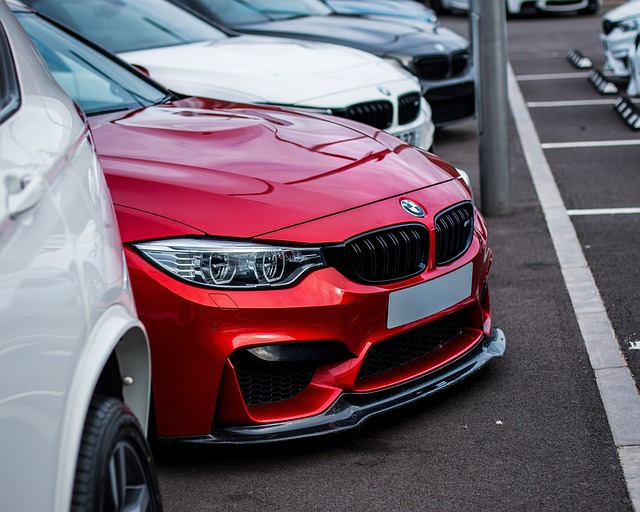

BMW é a sigla para Bayerische Motoren Werke, que significa "Fábrica de Motores da Baviera". A empresa foi fundada em 1917 na cidade de Munique, Alemanha. Inicialmente, a BMW produzia motores de aviões, mas logo se expandiu para a fabricação de motocicletas e automóveis. A marca é conhecida por seus veículos de alto desempenho e tecnologia avançada, além de seu design esportivo e elegante. A BMW é uma das principais fabricantes de automóveis do mundo e tem uma forte presença no mercado de luxo. A empresa também é conhecida por sua divisão de carros elétricos, a BMW i, que produz veículos sustentáveis e inovadores. 